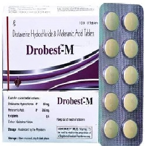

Drotaverine

အစာအိမ်နှင့် နှလုံးတွင်းရှိ ကြွက်သားများ (Smooth muscles) တဆတ်ဆတ် လှုပ်ရှားခြင်း၊ တင်းမာခြင်း တို့ကို ပြေလျော့စေပါသည်။
ဘယ်မှာသုံးလဲ
- Irritable Bowel Syndrome (ဗိုက်ရစ်နာခြင်း)
- ခေါင်းကိုက်ခြင်း
- အမျိုးသမီးများ ရာသီလာစဉ် နာကျင်ခြင်း
- ကလေးမွေးဖွားခါနီးသား အိမ်ခေါင်းကြွက်သားများ လှုပ်ရှားမှုကြောင့် နာကျင်ခြင်း
ဘယ်လိုသုံးရမလဲ
- ဆရာဝန်ညွှန်ကြားသည့်အတိုင်းတိတိကျကျအသုံးပြုပါ။
- အစာနှင့် သော်လည်းကောင်း၊ အစာနှင့်ခြားပြီး သော်လည်းကောင်းသုံးနိုင်ပါသည်။
- ဘေးထွက်ဆိုးကျိုးဘာတွေရှိလဲ
- ပျို့အန်ခြင်း
- သွေးခုန်နှုန်းပြောင်းလဲခြင်း
- ခေါင်းကိုက်ခြင်း
- ဆေးနှင့်ဓာတ်မတည့်သောလက္ခဏာများ (ရောင်ရမ်းယားယံခြင်း၊ အသက်ရှုရခက်ခြင်း)
- သွေးပေါင်ကျခြင်း
- အာခေါင်ခြောက်ခြင်း
- မူးဝေခြင်း
- အသက်ရှုကြပ်ခြင်းများ ခံစားရနိုင်ပါတယ်။
ဘာတွေ သတိထားရမလဲ
- အသည်းရောဂါ၊ ကျောက်ကပ်ရောဂါ၊ သွေးပေါင်ကျခြင်းတို့တွင် သတိပြု သုံးစွဲသင့်ပါသည်။
- ဆေးသောက်နေစဉ် အရက်သောက်သုံးမှု ရှောင်ရှားသင့်သည်။
- ကိုယ်ဝန်ဆောင်များတွင် ဆေးအသုံးပြုရန် အကြောင်းရင်း ခိုင်လုံမှသာ ဆရာဝန်ညွှန်ကြားချက်အတိုင်း အသုံးပြုသင့်ပါသည်။
- ဆေးတစ်ခုခုနှင့် ဓာတ်မတည့်ဖူးသူများ ဆရာဝန်နှင့် သေချာစွာတိုင်ပင်ပြီးမှ သောက်သုံးပါ။
ဆေး အာနိသင် ဘယ်လိုရှိလဲ
- Atropine
- Diclofenac sodium
- Levodopa
- Diazepam စသော ဆေးများနှင့် အပြန်အလှန် သက်ရောက်မှု ရှိနိုင်ပါသည်။ ထိုဆေးအချို့နှင့် တွဲဖက်သုံးစွဲလျင် ဆေးအာနိသင်အပေါ် သက်ရောက်မှု ရှိနိုင်ပါသည်။
ဆေးသောက်လွန်ရင်ဘာတွေဖြစ်မလဲ
- ဗိုက်အောင့်ခြင်း
- မူးဝေပျို့အန်ခြင်း
- သွေးခုန်နှုန်းမြန်ခြင်း
- သွေးပေါင်ကျခြင်းများ ဖြစ်နိုင်ပါသည်။ ဆေးရုံဆေးခန်းသို့အမြန်သွားရောက်ပါ။
- ဆေးတွေကို ဘယ်ဆေးမဆို ဆရာဝန် ဒါမှမဟုတ် တတ်ကျွမ်းနားလည်တဲ့ ကျန်းမာရေးဝန်ထမ်းတွေရဲ့ ညွှန်ကြားချက်အတိုင်း တိတိကျကျ သောက်သင့်ပါတယ်။
- မိမိသဘောနဲ့ဆေးရပ်လိုက်တာမျိုး မလုပ်သင့်ပါဘူး။
- ဘေးထွက်ဆိုးကျိုး ပြင်းပြင်းထန်ထန် ခံစားရရင်တော့ ဆရာဝန်နဲ့တိုင်ပင်ဖို့ လိုအပ်ပါတယ်။
Source– ဒေါက်တာချစ်စန္ဒီကျော်